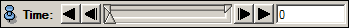
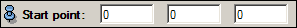
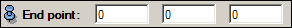
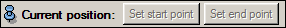
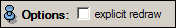

The TranslateeObject module can be used to animate the translation of a spatial data object between two points, which is done by changing the object's transformation, as opposed to manipulating the virtual camera. This allows to translate multiple objects in the scene independently, which is especially important for animated demonstrations. The most efficient way to create a TranslateObject module is to right-click on a spatial data object and select it from the Animation/Demo entry in the popup menu. Using the module is quite simple in conjunction with the transform editor of the object to be translated. Simply activate the transform editor by clicking on the green editor symbol of the object to be translated. You will see some kind of manipulator appear in the viewer, allowing you to translate the object using the mouse. Translate the object to the desired start point, and press the Set start point button in the ObjectTranslate module. The translate the object to the desired end point and press the Set end point button. Now you can use the time slider to animate the translation from start to end point.
Data[required]
The Data port connects the module to the spatial data object to be translated.Time[optional]
Port Time allows to synchronize with other modules, e.g. for using MovieMaker.
Time

The time slider is used to animate the translation. Press the play buttons on the left or right of the slider to play backwards or forwards, or click anywhere on the slider to jump to the respective time step. By right-clicking on the slider and selecting Configure you can change the slider increment in order to adjust the speed of the animation. (Please note that this increment value will have no effect if the TranslateObject module is driven by some other module like MovieMaker or DemoMaker.) For more details please refer to the time port documentation.Start point

Specify the X, Y, and Z coordinates of the start point of the translation. This can be set automatically by using the object's transform editor and clicking on the Set start point button.End point

Specify the X, Y, and Z coordinates of the end point of the translation. This can be set automatically by using the object's transform editor and clicking on the Set end point button.Current postion

Set start point: sets the values of the Start point port to the current position of the object. Especially useful in conjunction with the object's transform editor.
Set end point: sets the values of the End point port to the current position of the object. Especially useful in conjunction with the object's transform editor.
Options

explicit redraw: switching this toggle on will cause the module to explicitly call a "viewer redraw" command whenever the value of the time slider and translation is changed.